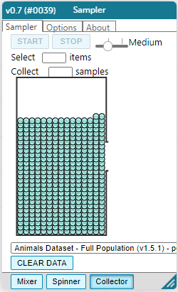

1 In the screenshots of the “Sampler” (below), show how you would create a small random sample of 10 animals and a large random sample of 40 animals. To create two separate tables (rather than a single hierarchical table), re-select and re-open “Sampler” from the Plugins menu before each sampling simulation.
 🖼Show image
🖼Show image
{kind=link}
2 In the options tab, did you select “with replacement” or “without replacement”? Why?
3 Make a bar chart for the animals in each sample, showing percentages of fixed and unfixed.
-
The percentage of fixed animals in the entire population is: 47.7%
-
The percentage of fixed animals in the small sample is:
-
The percentage of fixed animals in the large sample is:
4 Make a bar chart for the animals in each sample, showing percentages for each species.
-
The percentage of tarantulas in the entire population is: roughly 5%
-
The percentage of tarantulas in the small sample is:
-
The percentage of tarantulas in the large sample is:
5 Direct the sampler to generate a different set of random samples of these sizes. Make a new bar chart for each sample, showing percentages for each species.
-
The percentage of tarantulas in the entire population is: roughly 5%
-
The percentage of tarantulas in the small sample is:
-
The percentage of tarantulas in the large sample is:
6 Which repeated sample gave us a more accurate inference about the whole population? Why?
These materials were developed partly through support of the National Science Foundation,
(awards 1042210, 1535276, 1648684, and 1738598).  Bootstrap by the Bootstrap Community is licensed under a Creative Commons 4.0 Unported License. This license does not grant permission to run training or professional development. Offering training or professional development with materials substantially derived from Bootstrap must be approved in writing by a Bootstrap Director. Permissions beyond the scope of this license, such as to run training, may be available by contacting contact@BootstrapWorld.org.
Bootstrap by the Bootstrap Community is licensed under a Creative Commons 4.0 Unported License. This license does not grant permission to run training or professional development. Offering training or professional development with materials substantially derived from Bootstrap must be approved in writing by a Bootstrap Director. Permissions beyond the scope of this license, such as to run training, may be available by contacting contact@BootstrapWorld.org.